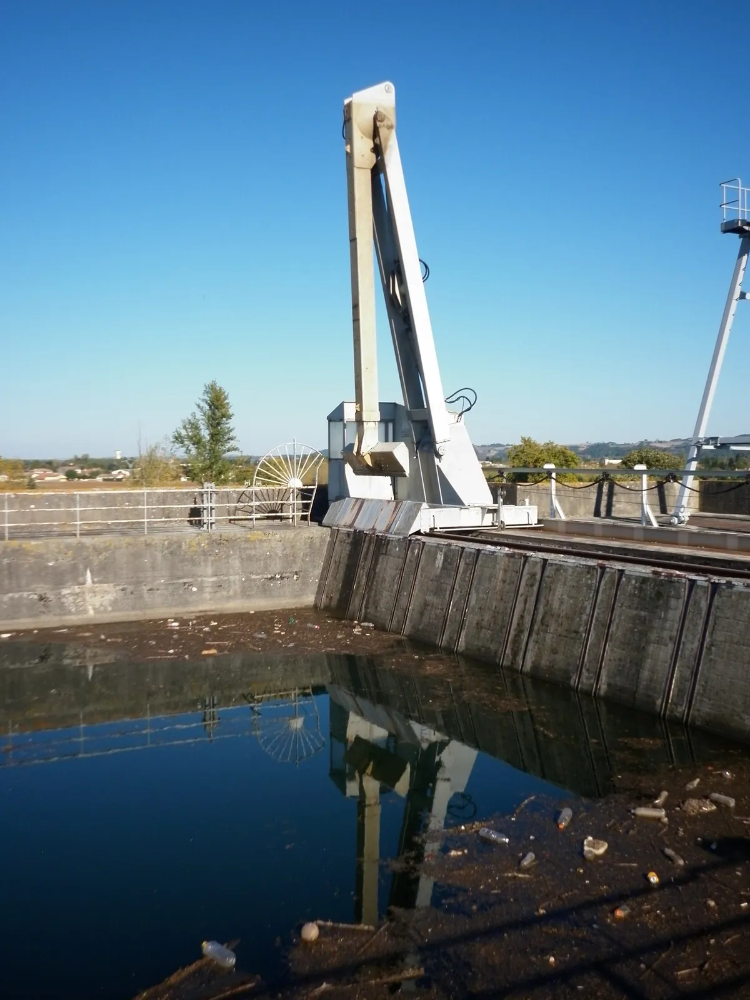
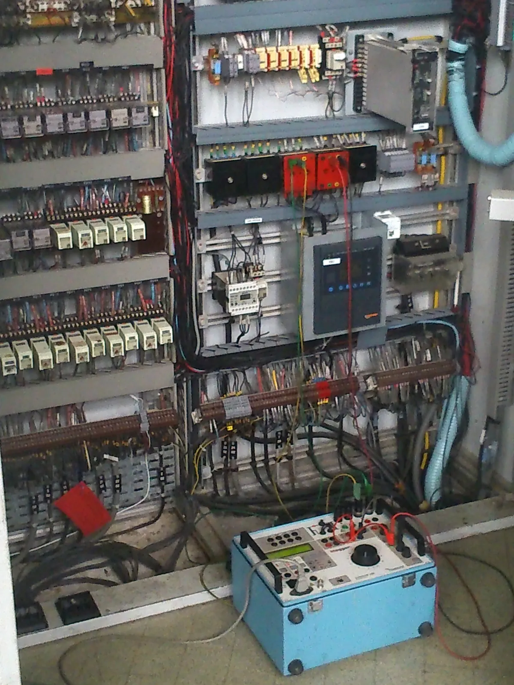
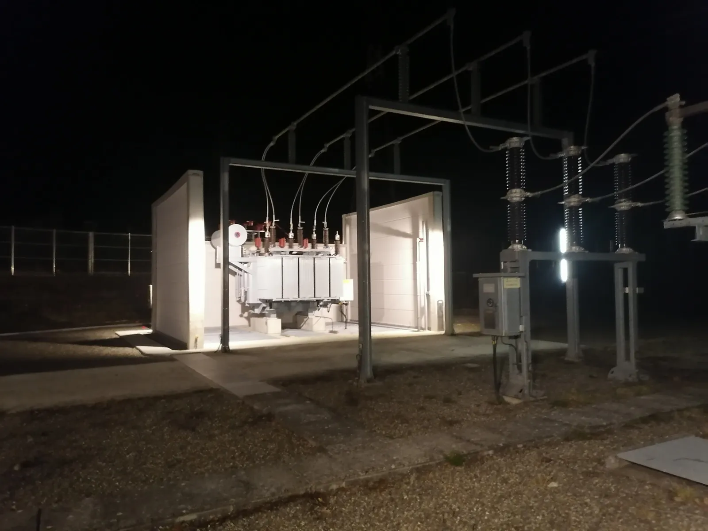
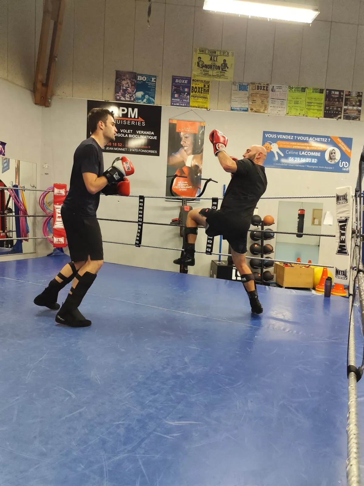
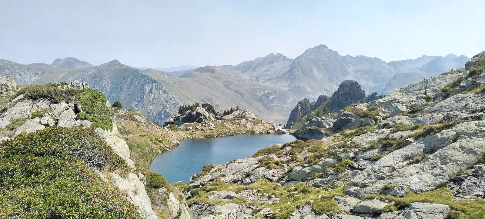

Systèmes électriques
Comprendre les installations et leurs contraintes d’exploitation.
- Réseaux HTA et HTB
- Centrales hydroélectriques et postes
- Diagnostic électrique et analyse de défauts
- Sécurité et disponibilité des installations
Électrotechnique · Protections · Systèmes de puissance
Professionnel des systèmes électriques et des protections, je poursuis des études d’ingénieur à l’ENSEEIHT en parallèle de mon activité à EDF.
Patrice Masson · Ingénieur en formation, 3EA

01 / Profil
Je m’appelle Patrice Masson. Depuis plus de quinze ans, mon parcours se construit dans le secteur de l’énergie, entre exploitation hydroélectrique, systèmes électriques, protections et contrôle-commande.
Après le terrain et l’expertise technique, j’exerce aujourd’hui dans la formation des professionnels chez EDF. Je complète cette expérience par des études d’ingénieur en énergie, électronique et automatique à l’ENSEEIHT.
Ce fil conducteur — comprendre les systèmes, les rendre fiables et transmettre leur fonctionnement — guide mon travail et mes études.
02 / Expertise
Trois domaines au croisement de l’exploitation, des protections et de la formation technique.
Comprendre les installations et leurs contraintes d’exploitation.
Tester, régler et faire évoluer des fonctions critiques.
Rendre les systèmes complexes compréhensibles et praticables.
03 / Projets sélectionnés
Modernisation hydroélectrique, continuité de service et mise en service de systèmes de protection.
Études · Automatisme · Mise en service
Intégré à l’équipe d’exploitation, j’ai conduit le projet de bout en bout : définition du besoin, études, schémas, programmation, réalisation de l’armoire et essais de réception.

Rénovation · Protections · Remise en service
Après l’arrêt de la centrale et les dégâts dus à l’humidité, j’ai travaillé avec un électricien et une entreprise partenaire à la reprise des schémas et à la rénovation du contrôle-commande et des protections.

PCCN · Protections HTA · Essais
J’ai participé à la transition vers un contrôle-commande numérique en maintenant le poste en exploitation, avec pour contrainte l’absence de déclenchement.
Autres réalisations
Contrôle des protections, diagnostics électriques, dépannage d’astreinte et recommandations techniques sur des centrales et des postes du Sud-Ouest.
Conception de mises en situation et de formations pratiques pour renforcer la compréhension, l’autonomie et la sécurité des techniciens.
04 / Parcours
Une progression professionnelle menée au contact des installations et des équipes.
EDF Hydro
Interventions de terrain, diagnostics et procédures d’exploitation. J’y construis mes premiers repères en sécurité électrique et en automatisme.
EDF Hydro · Enedis à partir de 2017
Maintenance, réglages, analyse de défauts et essais de relais sur des centrales hydroélectriques et des postes HTB.
EDF UFPI · Toulouse
Formation et expertise dans le domaine des protections, développement de mises en situation et coordination de projets pédagogiques.
ENSEEIHT · 3EA
J’approfondis l’électrotechnique, l’électronique et l’automatique en reliant les apports académiques à mon expérience industrielle.
Formation
05 / International & ouverture
Mes centres d’intérêt prolongent cette curiosité, sans se confondre avec mon métier.
Langues & mobilité
Je poursuis l’apprentissage des langues et souhaite enrichir mon parcours par une expérience dans un environnement international.

Je pratique la savate depuis 2007.

J’aime découvrir de nouveaux paysages, marcher et prendre le temps d’explorer.